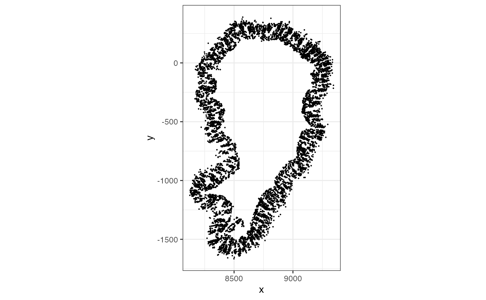
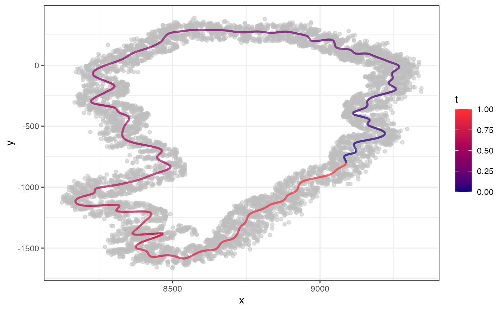
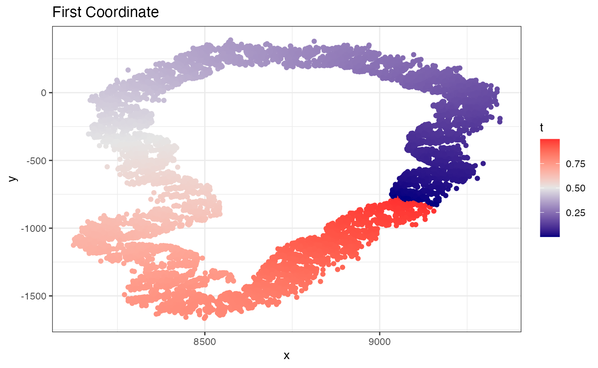
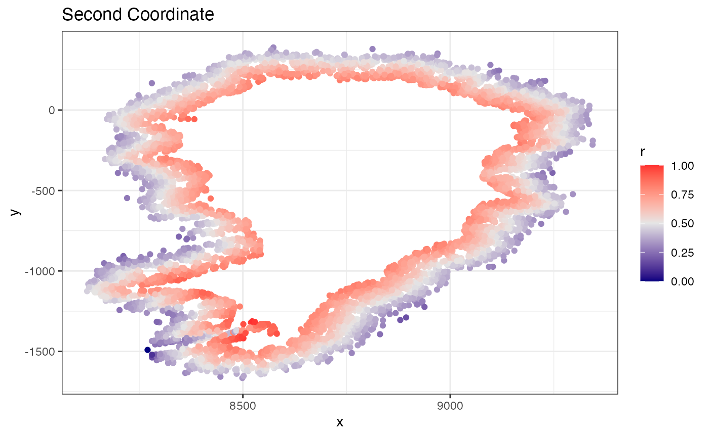
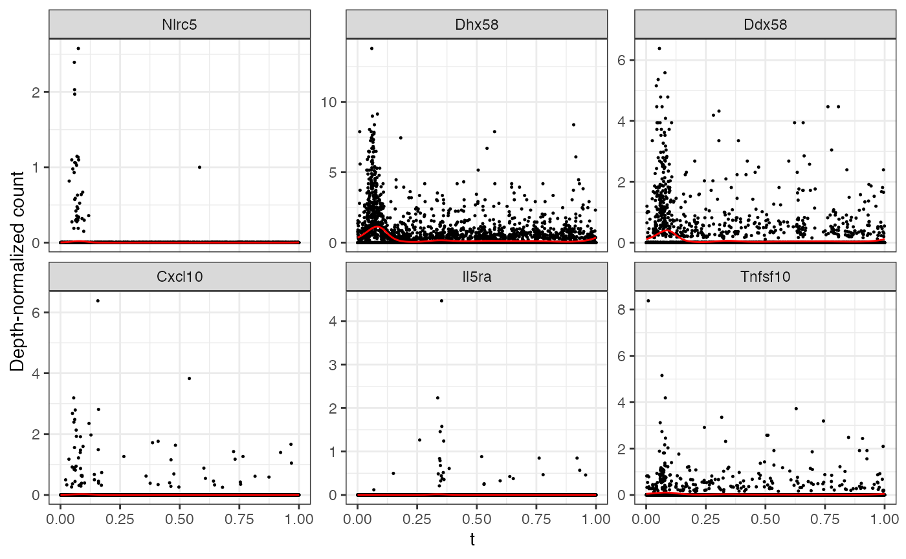
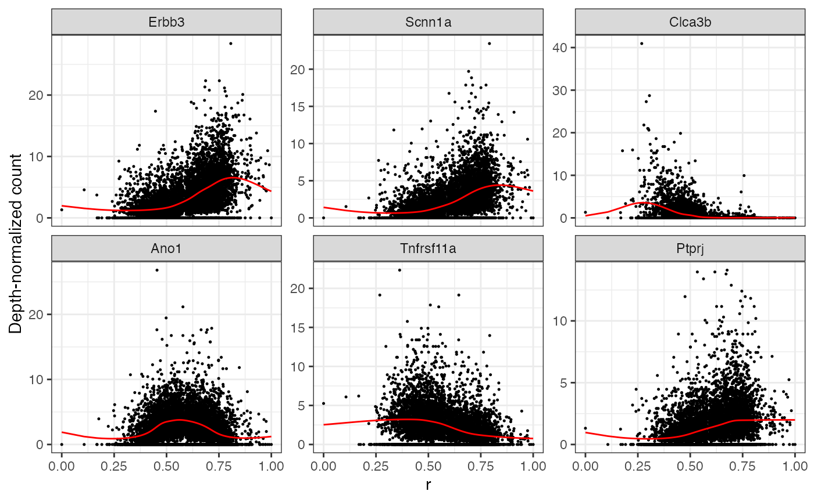
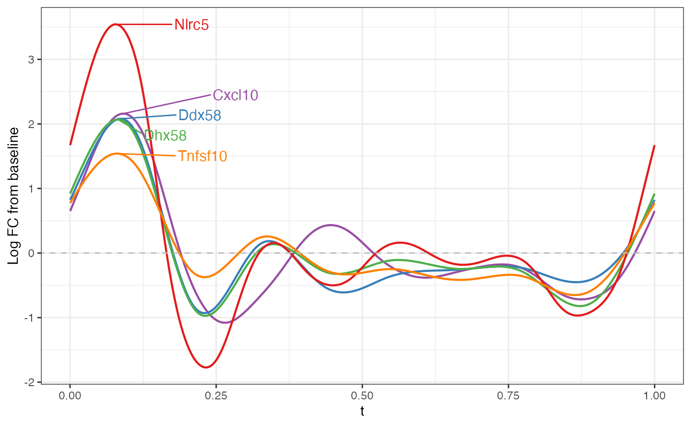
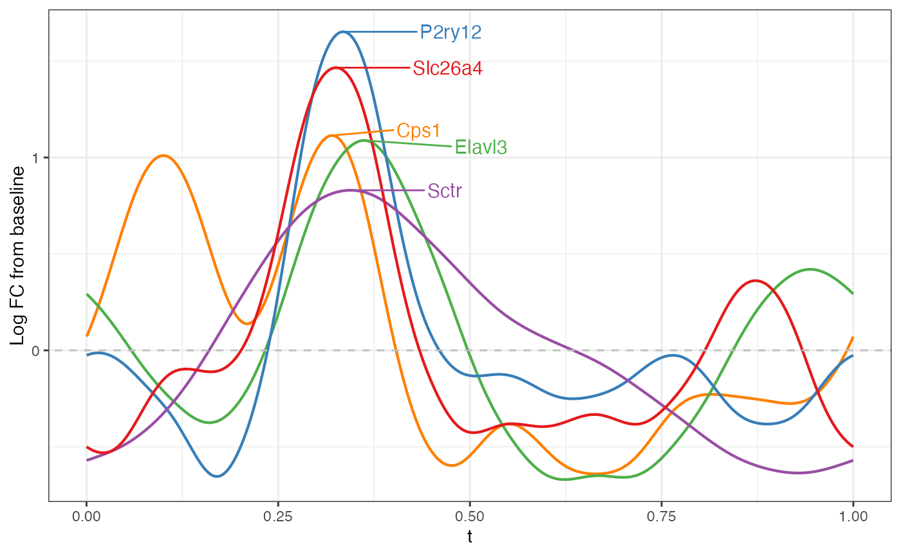

MERFISH Mouse Mucosa
mouse_mucosa.RmdTODO: Data availability. This example assumes that the mucosa coordinates and count matrix have already been saved locally. The coordinate file should contain one row per cell and two spatial coordinate columns. The count file should contain genes as rows and cells as columns.
# Replace these with the local paths where the data have been saved.
resolve_data_path <- function(path) {
candidates <- c(
path,
file.path("..", "..", path)
)
match <- candidates[file.exists(candidates)][1]
if (is.na(match)) {
stop("Could not find data file: ", path)
}
match
}
coords_file <- resolve_data_path("analysis/data/mucosa_sub_coords.csv")
counts_file <- resolve_data_path("analysis/data/counts_sub_mucosa.csv")
xy <- read.csv(coords_file, row.names = 1, check.names = FALSE)
xy <- as.matrix(xy)
storage.mode(xy) <- "double"
Y <- read.csv(counts_file, row.names = 1, check.names = FALSE)
Y <- as.matrix(Y)
storage.mode(Y) <- "double"
xy_df <- as.data.frame(xy)
colnames(xy_df) <- c("x", "y")
ggplot(xy_df, aes(x = x, y = y)) +
geom_point(size = 0.1) +
coord_fixed() +
theme_bw()
The mucosa in this example is approximately loop-shaped, so we ask
CurveFinder() to estimate a loop and use a smaller
neighborhood size.
curve_fit <- MorphoGAM::CurveFinder(
xy,
knn = 14, #Value used in paper, use k = "auto" for automatic
loop = TRUE
)
#Plot the fit and two coordaintes
curve_fit$curve.plot
curve_fit$coordinate.plot
curve_fit$residuals.plot
Next, we fit a smooth cyclic effect along the loop coordinate
t and a radial smooth effect for distance from the
curve.
mgam <- MorphoGAM::MorphoGAM(
Y,
curve.fit = curve_fit,
design = y ~ s(t, bs = "cc") + s(r, bs = "cr")
)
#> ================================================================================Genes with large peak.t values have a strong fitted
change along the loop coordinate.
top_t_genes <- rownames(mgam$results)[
order(mgam$results$peak.t, decreasing = TRUE)[1:6]
]
MorphoGAM::plotGAMestimates(
Y,
genes = top_t_genes,
curve_fit = curve_fit,
mgam_object = mgam,
nrow = 2
)
We can similarly inspect genes with large radial variation.
top_r_genes <- rownames(mgam$results)[
order(mgam$results$range.r, decreasing = TRUE)[1:6]
]
MorphoGAM::plotGAMestimates(
Y,
genes = top_r_genes,
curve_fit = curve_fit,
mgam_object = mgam,
type = "r",
nrow = 2
)
Now we can make the functional PCA plot to see the dominant modes of spatial variation:
MorphoGAM::plotFPCloading(
mgam,
curve.fit = curve_fit,
type = "t",
L=1 #First component
)
MorphoGAM::plotFPCloading(
mgam,
curve.fit = curve_fit,
type = "t",
L=2 #Second component
)